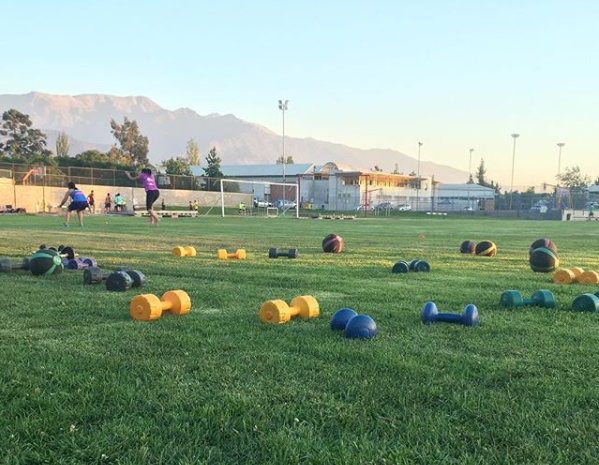

Cuando se habla de fuerza y deportes de resistencia, es normal en pensar en cómo mejorar nuestro físico de cara a un objetivo de alta exigencia y duración.
En la mayoría de las veces, los deportistas de larga distancia basan sus entrenamientos en sesiones para aumentar y mejorar su capacidad aeróbica, sin tener en cuenta que las rutinas de fuerza son fundamentales para que la musculatura tenga el tono adecuado, y con ello pueda superar largas horas de esfuerzo prolongado.